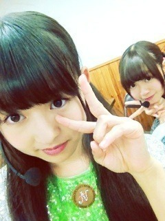

| 2012/10 22 Mon | 268回目*marika |
いつも読んでくださってる方、
初めて読んでくださった方、
コメントしてくださった方、
ありがとうございます。
＼なかいさん／

絶賛テスト勉強中。
みかん美味。
頭プシュー
......
乃木ここの感想
ありがとうございました！
えーとフジヤマで
前髪なくなったことは置いといて←
笑っていただいたようでよかった！
自分で勝手に作ったミッションも
クリアしたし！(手でハートするやつ)
絶叫マシン苦手そうに見えて
案外乗れちゃう私。
一回目はこわいけど、
次は余裕で乗れるよ
 たぶん
たぶん
たぶん
フジヤマはよだれが出る。
頑張って目を開けてたら涙も出る。
レッドタワーは...高かった。
誰か一緒にいこー←
それにしてもあのヘルメットに
付いてるカメラ恐ろしいね。
あかん角度だよ

というか私あかんあかん
言い過ぎだったね。うるさかった。
ゲームとかしてても
よく言ってしまうんです。
癖だなー...
みんなのリアクション見て
爆笑しちゃった！
結果どうなるんだろう。
次もお楽しみに♪
......
マイクでかかった！

ほんとになめてないよ
明日も頑張るーーーーーーーーー
まりか
コメント(229)
2012/10/22 21:00